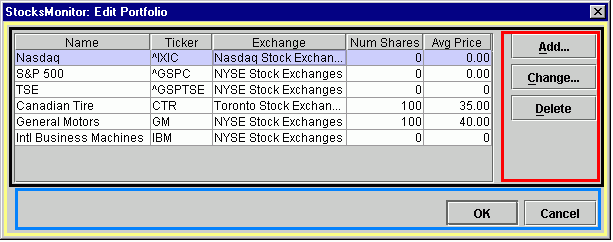
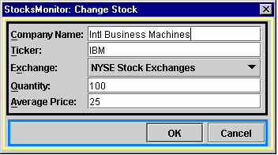

Standardized dialogs
Swing utility tasks
Consider JGoodies Forms for layouts
Most common layouts:
GridBagLayout
- excellent when many components involvedBoxLayout
(and associated Box class) - "glue" and "struts" (defined in Box,
not BoxLayout), combined with proper alignment and equalization
of sizes, produce results pleasing to the eyeBorderLayout
- often suitable for a top level containerFlowLayout
- items can appear on different rows, according to size of containerGridLayout
- forces all components to be the same sizeSpringLayout
- added in JDK 1.4BoxLayout
or BorderLayout), and smaller parts use their own layout, completely
independent of the others.
Please see the topic on JGoodies Forms for an interesting alternative to the standard JDK classes for layouts.
Example 1
Here's an example of a dialog box which uses four nested BoxLayout
objects to arrange its elements. The brightly colored areas group elements
which share the same BoxLayout :

Red - (vertical layout) "struts" provide uniform spacing around
each JButton, while "glue" takes up the remaining extra space
below the Delete button
Blue - (horizontal layout) again, struts provide uniform spacing
around each JButton, and glue takes up the remaining extra space
to the left of the OK button.
Black - (horizontal layout) contains the JTable and
the Add-Change-Delete buttons
Yellow - (vertical layout) the top level container for Black and Blue
Yellow and Blue form a standardized dialog,
in which top level layout and the OK, Cancel buttons
are defined by an abstract base class. Concrete subclasses define both
the contents of Black and the action taken by the OK button.
The sizing and alignment of JButton objects in BoxLayout
is not automatic, unfortunately. See Common utility
tasks for these related utility methods :
getCommandRowgetCommandColumnequalizeSizesalignAllX, alignAllYHere's a typical data entry dialog :

Blue - the standardized command row (same as Example 1)
Black - uses GridBagLayout. See Common
utility tasks for these utility methods related to GridBagLayout
and GridBagConstraints :
addSimpleEntryField - add a related JLabel and JTextField
to a GridBagLayoutaddSimpleDisplayField - add a pair of related JLabel
objects to a GridBagLayoutgetConstraints - a default set of constraints, which can be modified
as desired